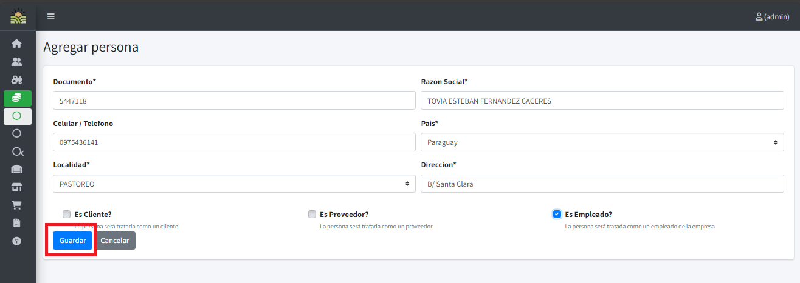
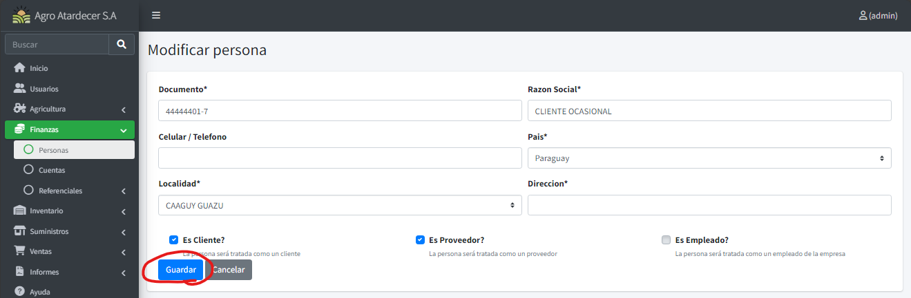
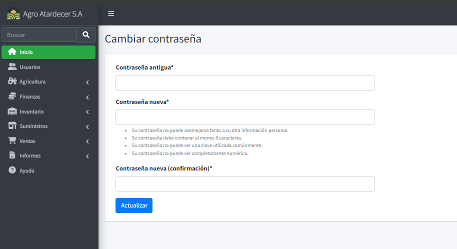
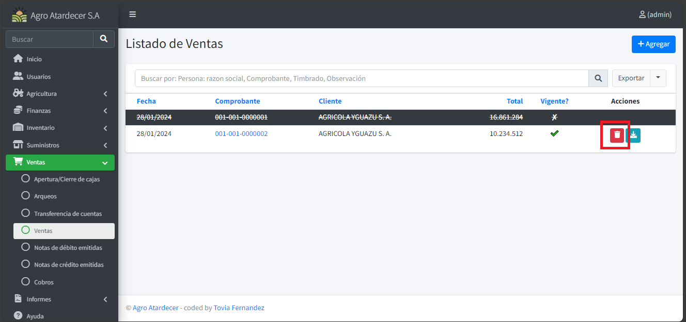
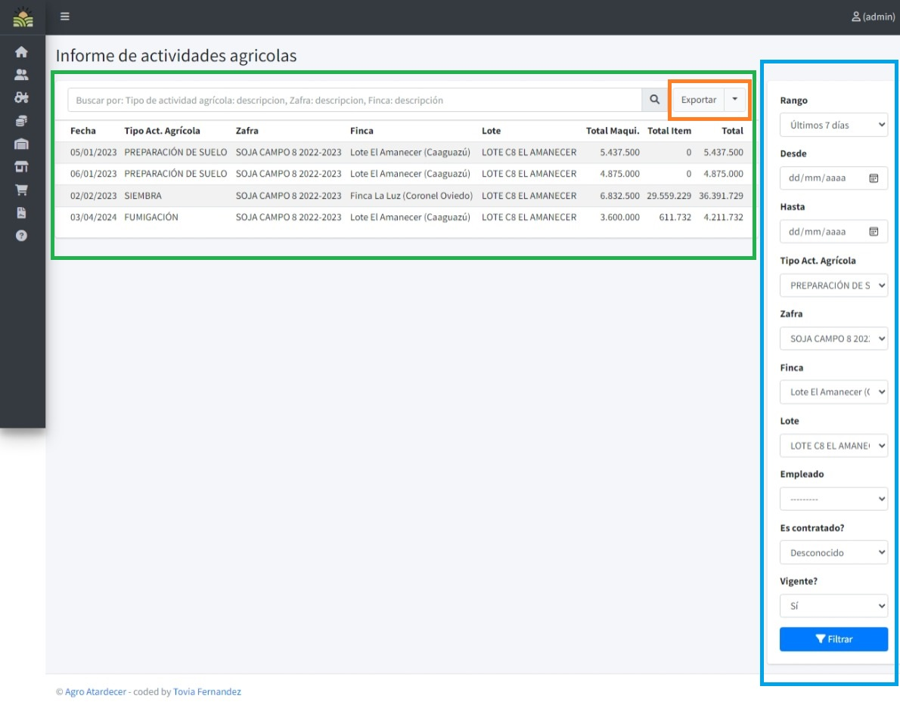

Manual de Usuario

Inicio
Objetivos
El propósito principal de esta documentación es proporcionar una guía detallada sobre los pasos específicos para el registro, uso y gestión del Sistema "Agro Atardecer". Esta guía está diseñada para enseñar e implementar el uso de la herramienta de manera efectiva a los usuarios.
Definiciones
Sistema Informático Agro Atardecer: Es una aplicación diseñada para facilitar las actividades diarias y gestiones realizadas por los agricultores, ya sea en el campo o en el ámbito de los negocios post-producción. Permite llevar una herramienta consigo que simplifica todos los procesos involucrados.

Acceso
Inicio de Sesión
Para ingresar al sistema, el usuario debe dirigirse a la pantalla de Acceso del Usuario. Una vez allí, procederá a ingresar su "Nombre de Usuario" y "Contraseña".
Menú Principal
Si la información de inicio de sesión es ingresada correctamente, el usuario accederá al Menú Principal o página principal del sistema.

Funciones Registros
Listado Base
Al acceder a alguna pantalla de registro básico, el sistema cuenta con una vista de listado de los registros ya cargados.
En este caso tomaremos como ejemplo el formulario de Personas.

Si desea ordenar alguna información, solo oprima en las cabeceras para realizar una ordenación por dicha columna seleccionada

Creando Registro.
Siguiendo con el ejemplo de personas, para crear un nuevo registro, se procede a oprimir el siguiente botón.

Una vez oprimido, nos aparecerá la ventana de registro.
Info
El símbolo * ej.: Razón Social * significa que el campo es requerido.
Los campos del tipo combo (---------- <) significan información relacionada (Información de tipo referencial):

Una vez cargado toda la información en los campos en pantalla se procede a oprimir el botón “Guardar”

Eliminando un registro.
Oprimir el botón de” Eliminar” que corresponde al detalle que queremos eliminar.

Esto nos llevara a una ventana de confirmación de eliminación, procedemos a aceptar presionar “Eliminar” para confirmar la eliminación, o cancelar para dejar sin efecto.

Actualizando un registro.
Oprimimos el botón de “Editar” al detalle que queramos actualizar alguna información.

Una vez oprimido, el sistema nos arrojará una ventana con la información pre cargada. Modifique lo que desee y proceda a oprimir “Guardar” para salvar los cambios realizados

Mantenimiento de Usuarios
Listado Base
Si el usuario cuenta con los permisos adecuados, puede crear nuevos usuarios accediendo a la opción "Usuarios" en la barra del menú principal.
Una vez dentro, se desplegará la siguiente pantalla:
Info
El funcionamiento es similar a los puntos mencionados anteriormente.
Registro de Nuevo Usuario
Seleccione "Añadir" para acceder a la pantalla de registro. Complete todos los campos requeridos y guarde la información para agregar exitosamente un nuevo usuario al sistema.

Actualización de Información de Usuario
En el modo de actualización (al presionar el botón de editar), podrá modificar varias informaciones del usuario, con excepción de la contraseña.

Restablecimiento de Contraseña
Diríjase a la opción en el menú con el nombre del usuario actual y seleccione "Cambiar Contraseña".

Dentro de esta sección, se le pedirá que ingrese tanto la contraseña antigua como la nueva para confirmar el cambio.

Funciones de Movimientos
Además de lo aprendido en los formularios de movimientos, en esta sección se presentan nuevas funciones y opciones. Tomaremos como ejemplo el formulario de Venta para ilustrar estas características adicionales.
Info
En este caso, nos centraremos en el formulario de Venta como ejemplo.
Listado Base
La pantalla de listado incorpora nuevas funcionalidades específicas de este formulario. Los registros tachados y pintados en gris indican que están anulados.
!!! info Los registros tachados y pintados en color gris, significan que están Anulados.

Anular Movimientos
Al oprimir el botón de "Anular", nos dirigirá a una ventana similar a la de eliminación.

Procedemos a oprimir en el botón rojo para anular la venta en este caso.

Descarga de Comprobante
En algunos movimientos, el sistema ofrece la opción de descargar un comprobante. Procedemos a oprimir el botón 'Descargar Factura'.

Al oprimir dicho botón, se descargará un archivo en su directorio local.

Registrar Movimiento
Info
- Apartado enmarcado en rojo (Información de cabecera del movimiento)
- Apartado enmarcado en azul (detalles del movimiento)
- Apartado enmarcado en naranja (opción de eliminado de detalle)
- Apartado enmarcado en verde (opción de añadir nuevo detalle)

Una vez cargada toda la información necesaria y haber pasado las diferentes validaciones del sistema, se procede a guardar la información cargada.
Pre Selección de Carga
Algunos formularios de Movimientos, como Cobro, Cierre de Zafra y Liquidaciones Agrícolas, poseen una pequeña ventana de selección antes de registrar el movimiento.
!!! info - Para este caso utilizaremos el formulario de Cobro. - Una vez oprimido el botón de añadir visualizaremos una ventana de selección.
Procedemos a seleccionar el deseado y ya estaremos registrando el movimiento.

Una vez seleccionado, se precargará la información correspondiente a la selección que realizó el usuario.
Otro tipo es el del formulario de Liquidación Agrícola.
Se procede a completar y ya visualizaremos el formulario de movimiento.

Funciones de Informes
Vista Principal y Filtros
Info
- Sección resaltada en azul (Filtros que afectarán a los detalles cargados)
- Sección resaltada en verde (Detalles del Informe)
- Botón "Filtrar": Genera los detalles a partir de los filtros cargados.
- Botón "Limpiar": Elimina los filtros y carga la información si no hay filtros añadidos.
- Botón "Exportar": Permite exportar los detalles del informe en varios formatos.

En la vista principal de la sección de informes, se destacan dos áreas clave: los filtros que permiten personalizar los detalles del informe (en azul) y los propios detalles del informe (en verde).
Al utilizar el botón "Filtrar", se generan los detalles del informe según los filtros seleccionados. Para limpiar los filtros y cargar la información sin filtros adicionales, puedes utilizar el botón "Limpiar". Además, si deseas exportar los detalles del informe, puedes hacer clic en el botón "Exportar".
El botón "Exportar" ofrece las siguientes opciones: - PDF: Exporta los detalles del informe en formato PDF. - XLSX: Exporta los detalles del informe en formato Microsoft Excel (XLSX). - ODS: Exporta los detalles del informe en formato OpenDocument Spreadsheet (ODS). - CSV: Exporta los detalles del informe en formato CSV.
Esta interfaz intuitiva proporciona a los usuarios un control eficiente sobre la generación y visualización de informes, permitiéndoles personalizar la información según sus necesidades específicas y exportarla en diferentes formatos según sus preferencias.